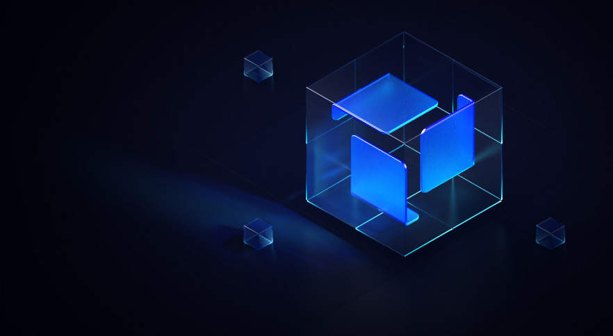

Pushing limits of trustless computing
KIRA is a virtualization and consensus framework that enables anyone to deploy code that can be trusted without need for smart contracts, application specific side-chains or operating any complex infrastructure.

The new way to connect the dots...
Building decentralized applications doesn't have to be difficult and the settlement of Layer 2 application state doesn't have to require any complex cryptographic operations.
With KIRA we can start onboarding deterministic Web2 systems to propel the new evolution of compossible Web3 far beyond what was ever possible before.